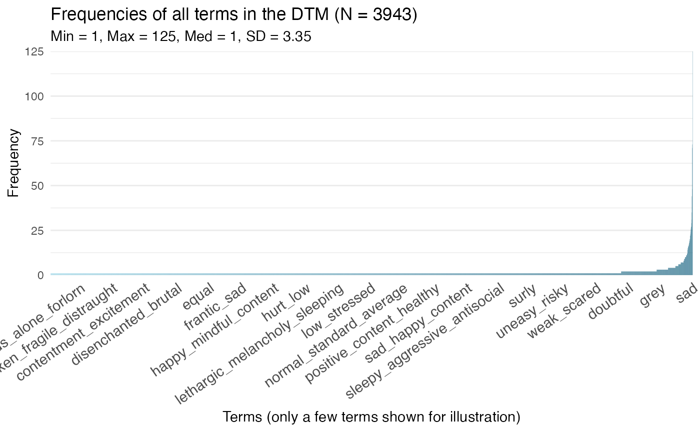

The topics-package enables Differential Language Analysis using words, phrases and topics
Please reference our tutorial article when using the package:
Language visualisation methods for psychological
assessments and Ackermann L., Zhuojun G. & Kjell O.N.E.
(2024). An R-package for visualizing text in topics. https://github.com/theharmonylab/topics.
DOI:zenodo.org/records/11165378..
This Getting Started tutorial is going through the most central topics functions.
In an example where the topics are used to predict the PHQ-9 score, the pipeline can be run as follows:
1. Data Preprocessing
To preprocess the data,
run the following command:
library(topics)
#>
#> This is topics: your text's new best friend (version 0.21.0).
#> Please note that the topics package requires you to download and install java from www.java.com.
#>
#> For more information about the topics package see www.r-topics.org and www.r-text.org.
save_dir = tempdir()
dtm <- topicsDtm(
data = dep_wor_data$Depword,
save_dir = save_dir)
#> The Dtm, data, and summary are saved in/var/folders/v8/54z3z5z5215527gfb9fzz_7c0000gn/T//RtmpnqcxqR/seed_42/dtms.rds
# Check the results from the dtm and refine stopwords and removal rates if necessary
dtm_evaluation <- topicsDtmEval(
dtm)
dtm_evaluation$frequency_plot
2. Model Training
To train the LDA model, run
the following command:
model <- topicsModel(
dtm = dtm,
num_topics = 20,
num_iterations = 1000,
save_dir = save_dir)3. Model Inference
To infer the topic term
distribution of the documents, run the following command:
preds <- topicsPreds(
model = model,
data = dep_wor_data$Depword,
save_dir = save_dir)4. Statistical Analysis
To analyze the
relationship between the topics and the prediction variable, run the
following command:
test <- topicsTest(
data = dep_wor_data,
model = model,
preds = preds,
pred_var_x = "PHQ9tot",
control_vars = c("Age"),
test_method = "linear_regression",
save_dir = save_dir)5. Visualization
To visualize the significant
topics as wordclouds, run the following command:
#topicsPlot(
# model = model,
# test = test,
# save_dir = save_dir,
# figure_format = "png")Differentiating balance and harmony through natural language analysis: A cross-national exploration of two understudied wellbeing-related concepts
The below list consists of papers analyzing human language in a similar fashion that is possible in topics.
Methods Articles
Gaining
insights from social media language: Methodologies and
challenges.
Kern et al., (2016). Psychological Methods.
Computer Science: Python Software
DLATK: Differential language analysis toolkit Schwartz, H. A., Giorgi, et al., (2017). In Proceedings of the 2017 Conference on Empirical Methods in Natural Language Processing: System Demonstrations